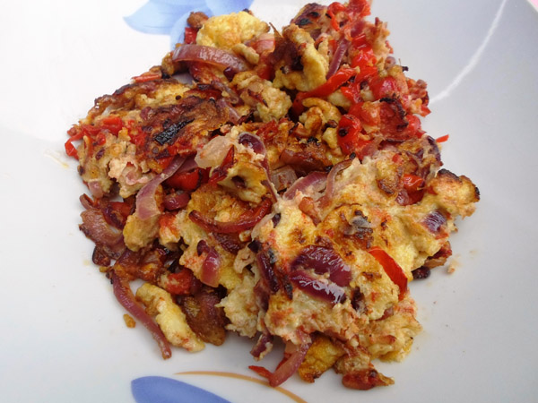

Egg sauce

Description
The egg sauce recipe is one of the easiest and quickest Nigerian dishes you can make. It tastes incredible and will leave you begging for more!
Egg sauce is a favorite in many households in Nigeria due to its versatility. You can eat it at any time of the day - for breakfast, lunch, or dinner. 20 minutes is all it takes from start to finish.
INGREDIENTS
- 4-6 eggs
- 2 medium-sized tomatoes, chopped
- 1-2 scotch bonnet, chopped
- 1 small onion, chopped
- 1 red bell pepper, chopped
- ⅓ cup vegetable oil
- 1 Seasoning cube
- ½ tsp curry
STEPS
- Break eggs into a shallow bowl, whisk till egg white and egg yolk are well combined
- Place a frying pan on a medium/low heat, add of vegetable oil, heat for about 2-3 minutes
- Add chopped peppers and onions and cook for about 4 to 5mins
- Add salt, seasoning, curry and thyme
- Add whisked eggs to sauce and leave for about a minute